프로젝트 소개
전라남도 나주시 산포면 산제리 757-2 일대 타운하우스 분양광고에 쓰일 조감도와 투시도 및 아이소메트릭 이미지 제작에대한 작업 과정과 결과물을 보여드리겠습니다.
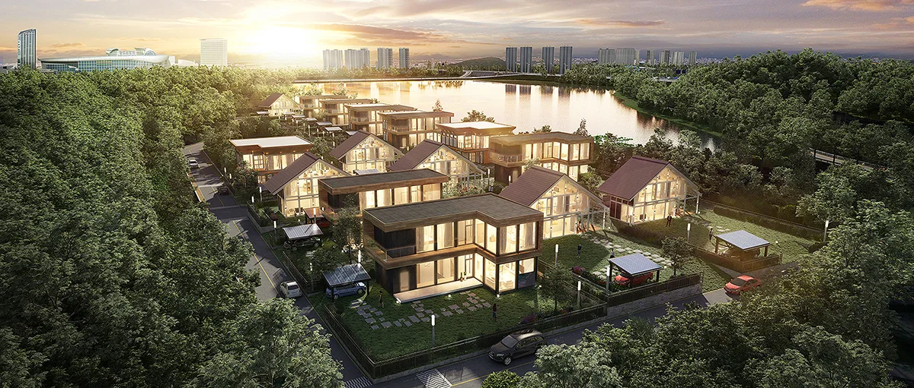
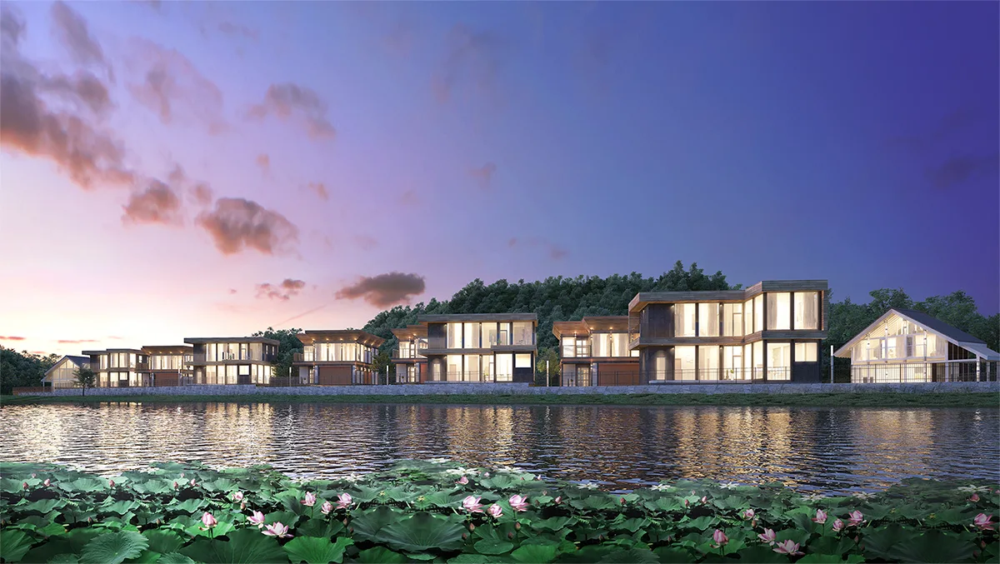
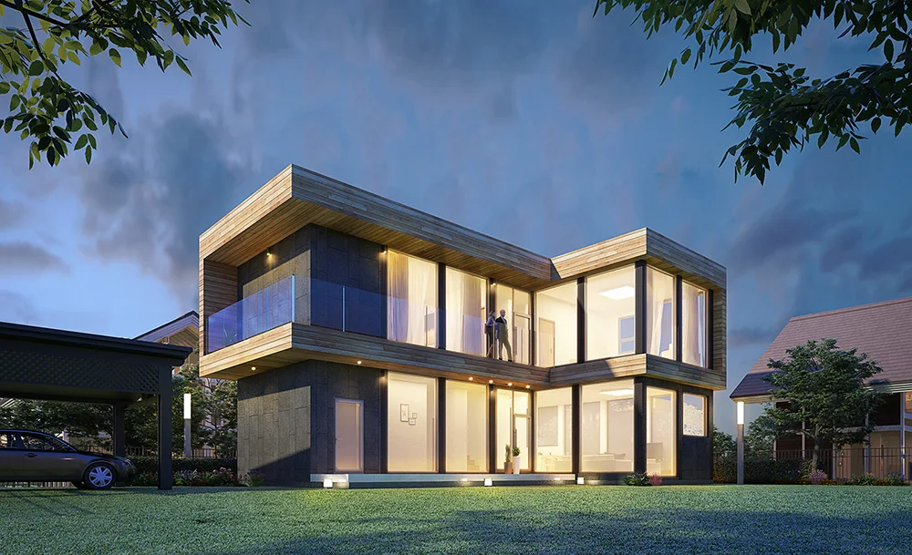
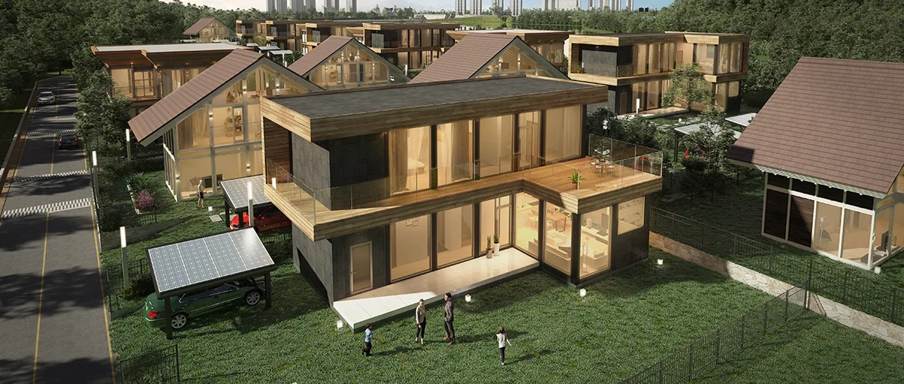
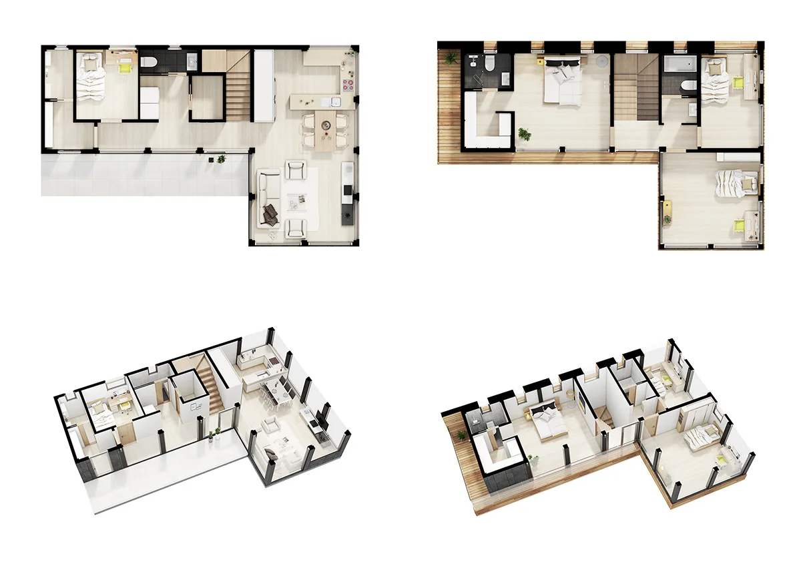
처음에 저희에게 문의를 주실때 타운하우스 사업 시행 위치를 확인하고 알려주셨습니다.
실제 사업대상지입니다.
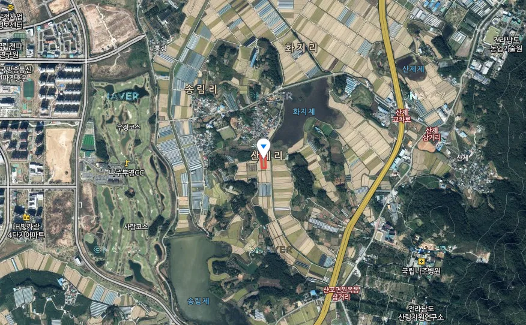
전문적으로 타운하우스를 기획, 판매하는 건축 전문 업체로 조감도 및 투시도, 아이소메트릭 제작까지 일체로 맞겨 주셨습니다.
프로젝트를 진행하는데 있어서 필요한 드론촬영물과 기획 자료 및 도면자료들을 구체적으로 넘겨주셔서 작업하는데 있어 편리하게 진행할 수 있었습니다.
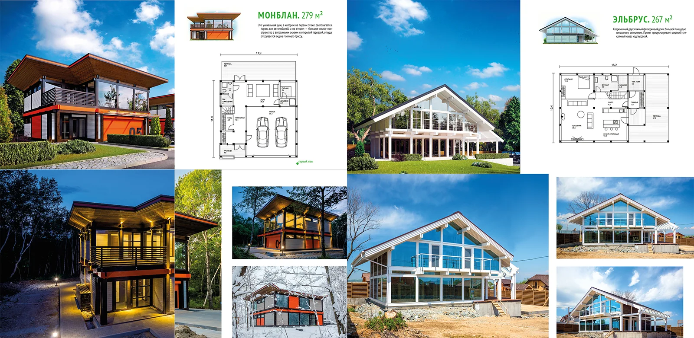
위 자료들은 작업과정시 필요한 레퍼런스 자료들입니다.
건축 투시도를 제작할때 원하시는 마감재 컬러나, 건축 형태의 자료들을 찾아주시면 좀 더 효율적으로 진행이 가능합니다.
레퍼런스 자료들은 디테일할수록 좋습니다.
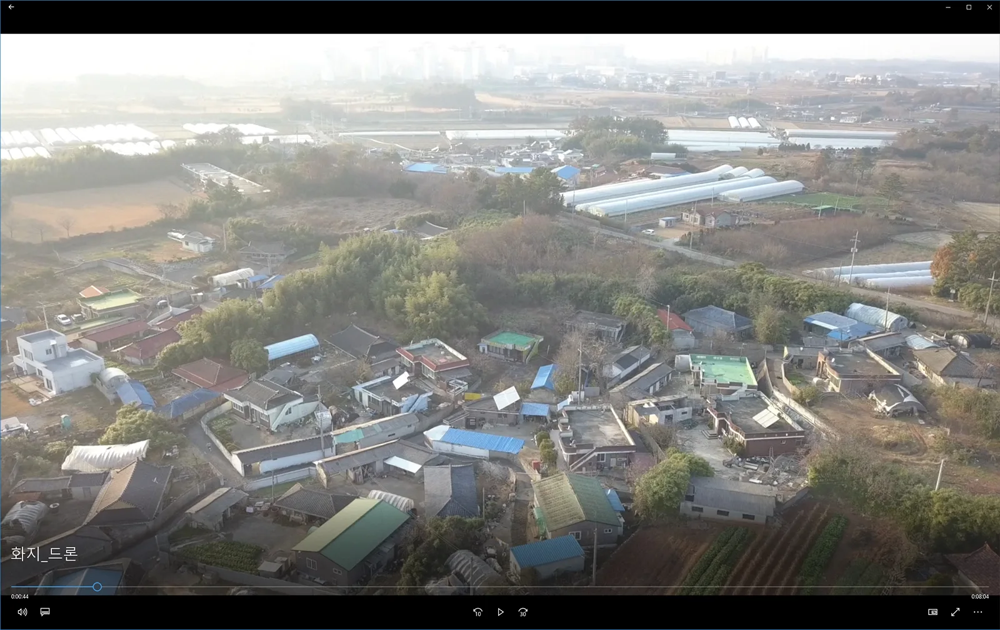
타운하우스의 사업대상지 주변 환경을 촬영한 영상을 보내주셨습니다.
이 자료를 참고하여 실제와 가까운 이미지를 제작할 수 있었습니다.
※ 드론촬영 이미지는 저희 '메이크그룹'에서도 직접 촬영이 가능하니 연락주시면 됩니다!
작업과정
뷰선정단계
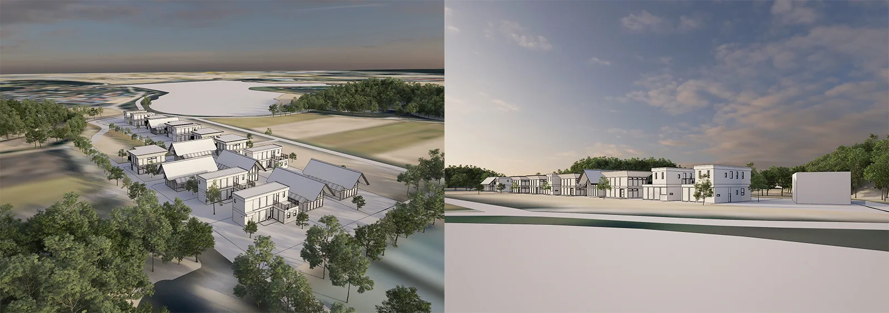
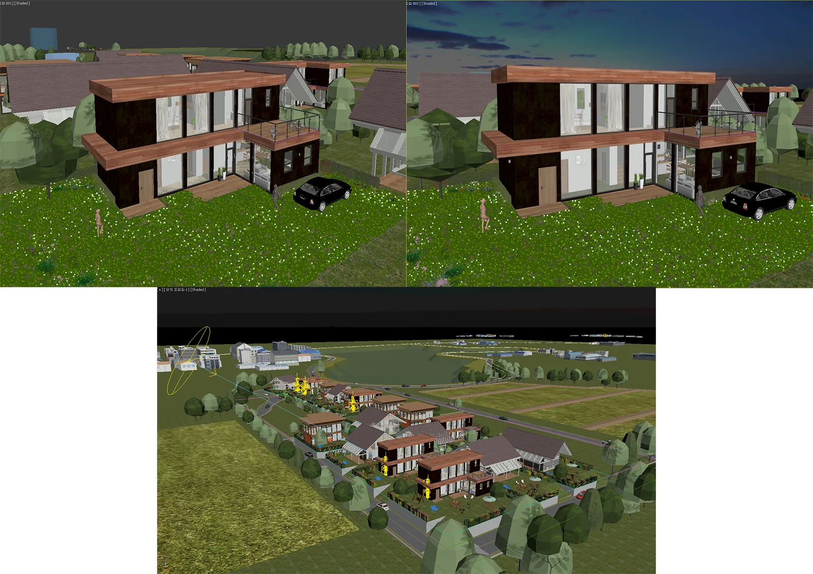
1차 완성 단계
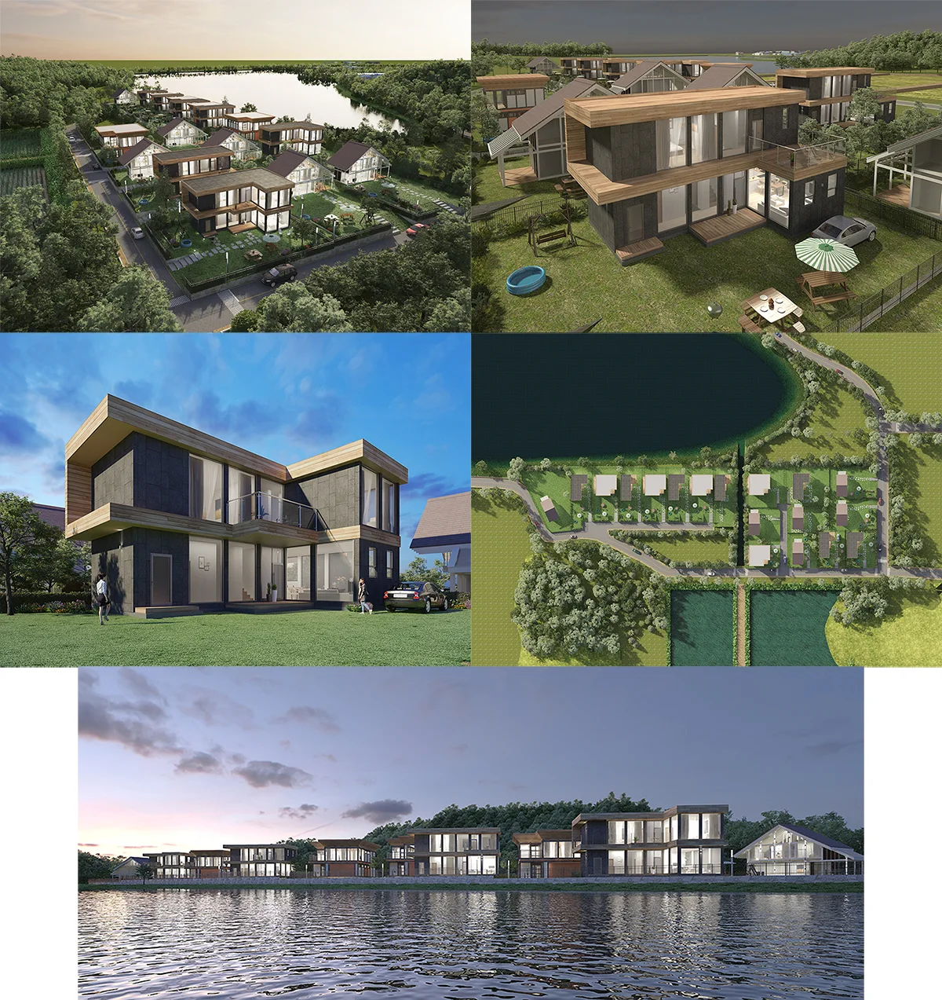
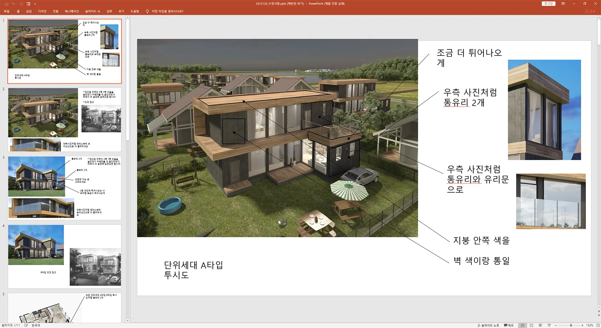
최종 완성 단계
최근 노후를 보내며 다양한 사람들과 어울려 살 수 있는 소규모 타운하우스 개발이 활발하게 이루어지고 있어, 메이크 그룹도 그에 발맞춰 최고의 이미지를 제공할 수 있는 회사가 되기 위해 기술적 개발에 성실히 임하고 있습니다.
항상 만족스러운 디자인 결과물 제작하여 제공하는 회사가 되도록 하겠습니다.
감사합니다.